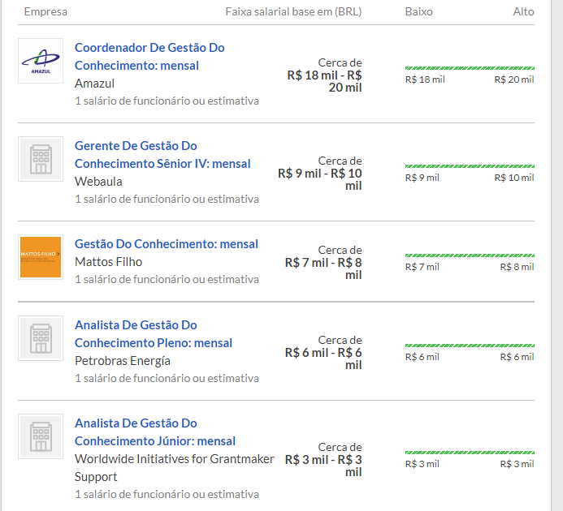
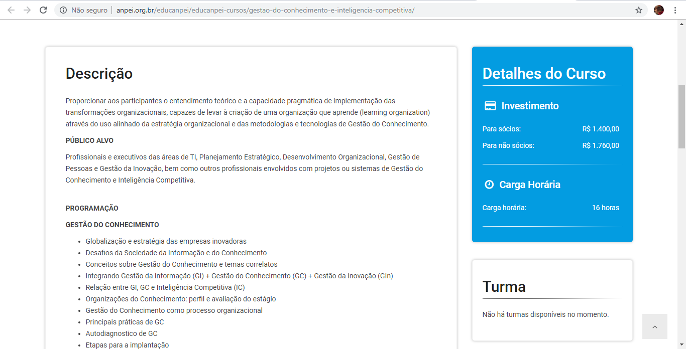
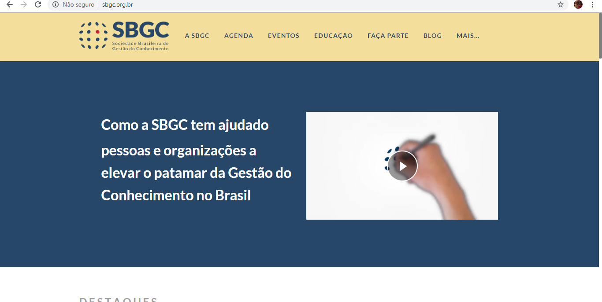

Gestão do conhecimento
e seu papel na inovação das empresas
Estrutura
- O que é gestão do conhecimento?
- Porque a é tão importante hoje?
- A base do Conhecimento
- Os dois principais tipos de conhecimento
- Atributos chave da GC
- Aspectos de pesquisa e mercado
- Case 1: Banco do Brasil
- Case 2: Serpro
- Questões para reflexão
O que é gestão do conhecimento?
"Knowledge management was initially defined as the process of applying a systematic approach to the capture, structuring, management, and dissemination of knowledge throughout an organization to work faster, reuse best practices, and reduce costly rework from project to project". Nonaka and Takeuchi
Lembrando que
Usar conhecimento não o consome
Transferir conhecimento não resulta em sua perda
O conhecimento é abundante mas a habilidade de usá-lo é escassa
A maior parte do conhecimento organizacional vai embora pela porta ao fim do dia
Porque a Gestão do Conhecimento é tão importante hoje?
Globalização dos negócios
Hoje, as organizações são mais globais - multisite, multilíngue e multicultural.
Organizações mais enxutas
Estamos fazendo mais e mais rápido, mas também precisamos trabalhar de maneira mais inteligente como trabalhadores do conhecimento - aumento do ritmo e da carga de trabalho.
Amnésia corporativa
Somos mais móveis, o que cria problemas de continuidade do conhecimento e impõe demandas contínuas de aprendizado
Não esperamos mais trabalhar para a mesma organização durante toda a nossa carreiraAvanços tecnológicos
Estamos mais conectados - os avanços da tecnologia da informação tornaram a conectividade não apenas onipresente: espera-se que estejamos sempre ativos e o tempo de resposta agora é medido em minutos.
A base do Conhecimento
Dados
Conjuntos de valores armazenados simbolicamente como pontos num espaço multidimensional não-euclidiano. o.O

Informações
Dados interpretados por um sistema cognitivo e que permitem a tomada de decisões num dado fluxo de eventos.
Mas só isso?
Teoria da Informação
Propriedades estatísticas de um dado sistema e as correlações entre os estados de dois sistemas, independentemente dos significados e qualquer conteúdo semântico destes estados.


Shannon e Weaver
Conhecimento
As idéias, entendimentos e repertórios que todos possuímos - é o Recurso fundamental que nos permite operar de forma inteligente.
Os dois principais tipos de conhecimento
Tácito
Explícito
Atributos chave da gestão do conhecimento
- Geração de conhecimento novo
- Acesso de conhecimento valioso de fontes externas
- Usar o conhecimento acessível na tomada de decisão
- Embarcar conhecimento nos processos, produtos e/ou serviços
- Representar o conhecimento em documentos, bancos de dados e software
- Facilitar o crescimento do conhecimento através da cultura e incentivos
- Transferir o conhecimento existente para outras partes da organização
- Medir o valor dos ativos de conhecimento e o impacto na organização
Relevância do tema
Gestão do conhecimento nas empresas
Uma pesquisa do International Data Corp. (IDC), estima que a gestão deficiente do conhecimento seja responsável pela perda de US$ 31,5 bilhões anualmente, somente considerando as empresas listadas na Fortune 500.
Outra pesquisa da TSIA detectou que a implantação de sistemas de gestão do conhecimento nas empresas eleva a produtividade geral das organizações entre 10 e 40%.
Fonte: https://fia.com.br/blog/gestao-do-conhecimento/Mercado de trabalho

www.glassdoor.com.brMBA
Investimento R$ 7.099,00Associação Nacional de Pesquisa e Desenvolvimento das Empresas Inovadoras
Workshops e eventos
Cases
Banco do Brasil
Em um evento de capacitação de colaboradores, a gestão do Banco do Brasil descobriu que os funcionários consideravam a “hora do café” a mais importante para disseminação de conhecimento nas agências.
De posse dessa informação, foi criado um evento de treinamento. Nele, se reproduziu esse ambiente para troca de experiências e conhecimentos gerados pelos funcionários da empresa.
Com o desenvolvimento, a ação se tornou uma ferramenta de comunicação interna e compartilhamento de informações. Assim, passou a ser utilizada de norte a sul do país. Dessa forma, foi possível implementar, em uma agência do nordeste, práticas que renderam bons frutos em uma agência da região sudeste.
Serviço Federal de Processamento de Dados
Outro exemplo de gestão do conhecimento implantada com sucesso é a de mapeamento dos conhecimentos organizacionais do Serpro. Para evitar que informações centralizem apenas em um funcionário, atribuindo a ele tarefas que apenas um é capaz de exercer, a empresa criou a Árvore Serpro de Conhecimentos.
A base de dados da instituição é nutrida paulatinamente com todo o processo organizacional sobre produtos, serviços e trato com os clientes. Dessa forma, foi criada uma cultura de armazenamento de dados. Assim, eles podem ser consultados sempre que necessário, disseminando o conhecimento gerado e evitando a monopolização de tarefas.
Dessa forma, sempre que um novo colaborador é contratado ou remanejado, ele já conta com um vasto banco de referências. Com isso, pode exercer seu trabalho como o esperado pela empresa.
Questões para reflexão
Como nós podemos aumentar a transferência de conhecimento entre as pessoas da nossa organização?
Como os colaboradores, clientes, fornecedores e stakeholders podem aumentar a competência uns dos outros?
Como podemos aumentar a conversão das competências individuais em sistemas, ferramentas e templates? E usá-los para aumentar a competência individual?
Como nós podemos habilitar a conversa entre clientes, fornecedores e stakeholders para que eles melhorem sua competência?
Como a competência dos clientes, fornecedores e stakeholders melhoram os sistemas, ferramentas, processos e produtos da nossa organização e vice-versa?
Como os sistemas, ferramentas, processos e produtos podem ser efetivamente integrados?
“Para que as informações sejam valiosas ou significativas, elas devem ser acessíveis, precisas, oportunas, completas, econômicas, flexíveis, confiáveis, relevantes, simples, verificáveis e seguras. Conhecimento é a conscientização e compreensão de um conjunto de informações e maneiras pelas quais as informações podem ser úteis para apoiar uma tarefa específica ou chegar a uma decisão”.
McGonigle and Mastrian 2018
Dúvidas? Anseios? Perplexidades? Sonhos?